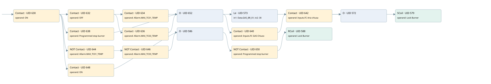

burner lock
burner control · 검색 색인 순서 12 · 원본 내부 NID 추정 11
백업 PLF 원본의 2690615 바이트 위치에서 복원한 XML. 검색 문서 1865의 객체 키 16102200e110000000000000와 연결했다. 이름 해석 15/15개. 남은 RefId는 상수 또는 미해석 참조다.
연결 구조 다시 그리기
원본 Part/PCon/Wire를 이용한 연결도다. TIA 화면의 래더 배치 또는 실행 결과를 재현한 그림은 아니다. 핀 연결은 아래 표와 원본 XML을 기준으로 읽는다. 노드 위에 마우스를 두면 피연산자 이름을 볼 수 있다.

접점·코일·블록과 피연산자
| Part UID | Gate | Negated 핀 | 연결 피연산자 |
|---|---|---|---|
| 630 | Contact | operand = ON | |
| 632 | Contact | operand = OFF | |
| 634 | Contact | operand = Allarm.MAX_TC01_TEMP | |
| 636 | Contact | operand = Allarm.MAX_TC03_TEMP | |
| 638 | Contact | operand = Programmed stop burner | |
| 652 | O | ||
| 573 | Le | in1 = Data.GAS_BR_01; in2 = 30 | |
| 640 | Contact | operand = Inputs.FC GAS Chiuso | |
| 642 | Contact | operand = Inputs.FC Aria chiusa | |
| 572 | O | ||
| 579 | SCoil | operand = Lock Burner | |
| 644 | Contact | operand | operand = Allarm.MAX_TC01_TEMP |
| 646 | Contact | operand | operand = Allarm.MAX_TC03_TEMP |
| 648 | Contact | operand = ON | |
| 586 | O | ||
| 650 | Contact | operand | operand = Programmed stop burner |
| 588 | RCoil | operand = Lock Burner |
접점 경로를 펼친 조건식
Contact·O/A·비교기의 원본 연결을 읽기 쉽게 펼친 보조 해석이다. POWER는 전원 레일 시작을 뜻한다. 호출 블록·에지·타이머의 내부 동작과 다중 쓰기 순서는 이 표로 실행 검증하지 않았다. 미해석 핀과 RefId는 원문 연결표에서 확인한다.
| UID | 동작 | 대상 | 원본 접점 경로 | 내용 |
|---|---|---|---|---|
| 579 | SCoil | Lock Burner | (((((ON AND OFF) AND Allarm.MAX_TC01_TEMP) OR ((ON AND OFF) AND Allarm.MAX_TC03_TEMP) OR (ON AND Programmed stop burner)) AND [Data.GAS_BR_01 <= 30]) OR (((((ON AND OFF) AND Allarm.MAX_TC01_TEMP) OR ((ON AND OFF) AND Allarm.MAX_TC03_TEMP) OR (ON AND Programmed stop burner)) AND Inputs.FC GAS Chiuso) AND Inputs.FC Aria chiusa)) | 조건 성립 시 Set |
| 588 | RCoil | Lock Burner | ((((ON AND NOT [Allarm.MAX_TC01_TEMP]) AND NOT [Allarm.MAX_TC03_TEMP]) OR ON) AND NOT [Programmed stop burner]) | 조건 성립 시 Reset |
원본 배선 연결
| Wire UID | 동일 Wire 연결 끝점 |
|---|---|
| 653 | Powerrail {} ↔ Part 630.in |
| 604 | ORef 589 (ON) ↔ Part 630.operand |
| 631 | Part 630.out ↔ Part 632.in ↔ Part 638.in ↔ Part 644.in ↔ Part 648.in |
| 605 | ORef 590 (OFF) ↔ Part 632.operand |
| 633 | Part 632.out ↔ Part 634.in ↔ Part 636.in |
| 606 | ORef 591 (Allarm.MAX_TC01_TEMP) ↔ Part 634.operand |
| 635 | Part 634.out ↔ Part 652.in1 |
| 607 | ORef 592 (Allarm.MAX_TC03_TEMP) ↔ Part 636.operand |
| 637 | Part 636.out ↔ Part 652.in2 |
| 610 | ORef 593 (Programmed stop burner) ↔ Part 638.operand |
| 639 | Part 638.out ↔ Part 652.in3 |
| 611 | Part 652.out ↔ Part 573.pre ↔ Part 640.in |
| 612 | ORef 594 (Data.GAS_BR_01) ↔ Part 573.in1 |
| 613 | ORef 595 (30) ↔ Part 573.in2 |
| 614 | Part 573.out ↔ Part 572.in1 |
| 615 | ORef 596 (Inputs.FC GAS Chiuso) ↔ Part 640.operand |
| 641 | Part 640.out ↔ Part 642.in |
| 616 | ORef 597 (Inputs.FC Aria chiusa) ↔ Part 642.operand |
| 643 | Part 642.out ↔ Part 572.in2 |
| 618 | Part 572.out ↔ Part 579.in |
| 620 | ORef 598 (Lock Burner) ↔ Part 579.operand |
| 621 | ORef 599 (Allarm.MAX_TC01_TEMP) ↔ Part 644.operand |
| 645 | Part 644.out ↔ Part 646.in |
| 622 | ORef 600 (Allarm.MAX_TC03_TEMP) ↔ Part 646.operand |
| 647 | Part 646.out ↔ Part 586.in1 |
| 624 | ORef 601 (ON) ↔ Part 648.operand |
| 649 | Part 648.out ↔ Part 586.in2 |
| 625 | Part 586.out ↔ Part 650.in |
| 626 | ORef 602 (Programmed stop burner) ↔ Part 650.operand |
| 651 | Part 650.out ↔ Part 588.in |
| 628 | ORef 603 (Lock Burner) ↔ Part 588.operand |
식별자 해석 근거 15개
| ORef UID | RefId | 이름 | IdentXmlPart 파일 | 해석 방법 |
|---|---|---|---|---|
| 589 | 1 | ON | 0582-IdentXmlPart.xml | UID/RID + search-text + NID agreement |
| 590 | 80 | OFF | 0582-IdentXmlPart.xml | UID/RID + search-text + NID agreement |
| 591 | 68 | Allarm.MAX_TC01_TEMP | 0585-IdentXmlPart.xml | UID/RID + search-text + NID agreement |
| 592 | 69 | Allarm.MAX_TC03_TEMP | 0585-IdentXmlPart.xml | UID/RID + search-text + NID agreement |
| 593 | 54 | Programmed stop burner | 0582-IdentXmlPart.xml | UID/RID + search-text + NID agreement |
| 594 | 88 | Data.GAS_BR_01 | 0585-IdentXmlPart.xml | UID/RID + search-text + NID agreement |
| 595 | 82 | 30 | 0586-IdentXmlPart.xml | literal candidate: UID/RID/NID + nearby named declarations + search-text agreement |
| 596 | 223 | Inputs.FC GAS Chiuso | 0585-IdentXmlPart.xml | UID/RID + search-text + NID agreement |
| 597 | 224 | Inputs.FC Aria chiusa | 0585-IdentXmlPart.xml | UID/RID + search-text + NID agreement |
| 598 | 89 | Lock Burner | 0582-IdentXmlPart.xml | UID/RID + search-text + NID agreement |
| 599 | 68 | Allarm.MAX_TC01_TEMP | 0585-IdentXmlPart.xml | UID/RID + search-text + NID agreement |
| 600 | 69 | Allarm.MAX_TC03_TEMP | 0585-IdentXmlPart.xml | UID/RID + search-text + NID agreement |
| 601 | 1 | ON | 0582-IdentXmlPart.xml | UID/RID + search-text + NID agreement |
| 602 | 54 | Programmed stop burner | 0582-IdentXmlPart.xml | UID/RID + search-text + NID agreement |
| 603 | 89 | Lock Burner | 0582-IdentXmlPart.xml | UID/RID + search-text + NID agreement |
검색 코드 보조 자료
참조 명칭을 찾기 위한 자료이며 실행 순서나 AND/OR 관계는 위 연결표로 확인한다.
"on" "off" "allarm".max_tc01_temp "data".gas_br_01 30 "lock burner" "programmed stop burner" "allarm".max_tc01_temp "allarm".max_tc03_temp "programmed stop burner" "lock burner" "on" "allarm".max_tc03_temp "inputs"."fc gas chiuso" "inputs"."fc aria chiusa"